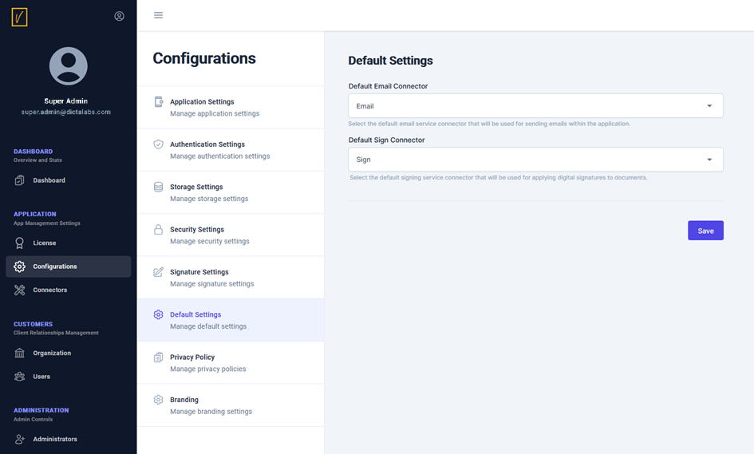

Configure Connectors in Default Settings
In the previous section, we discussed adding external TSPs and other external components like the email server. From the list of configured connectors, the administrator can choose the default email connector and the default Signing Service Connector using the screen shown below:

In this screen, the administrator can select the default connectors for:
-
Email Connector: Choose the default email connector to manage email notifications.
-
Signing Service Connector: Select the default signing service connector for handling signatures.